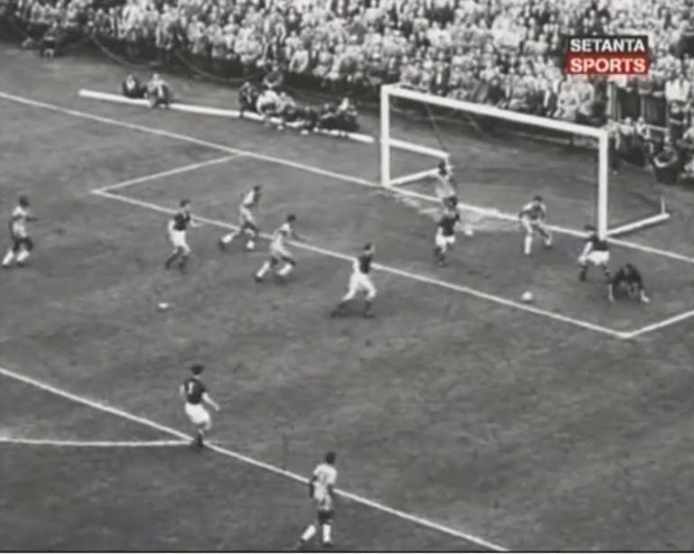
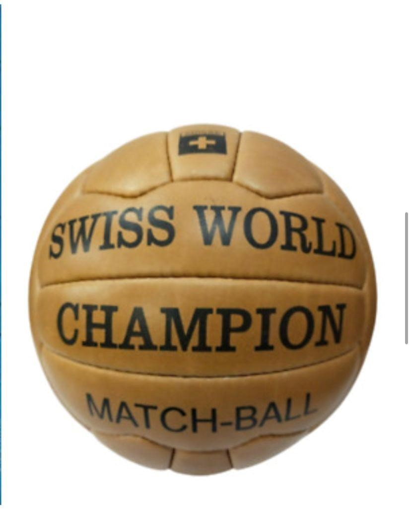
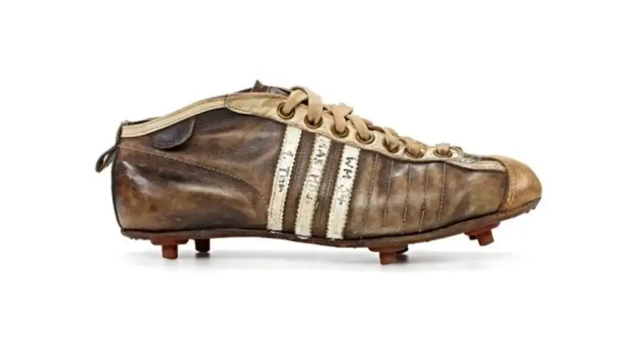

A Transmissão por Televisão
Um dos grandes saltos da Copa de 1954 foi a transmissão ao vivo capitaneada pela recém-criada Rede Eurovisão da EBU. Antigamente, os jogos eram gravados em películas físicas para exibição tardia nos cinemas. O sinal de micro-ondas permitiu que múltiplos países da Europa Ocidental assistissem às disputas simultaneamente ao vivo.

Tecnologias Esportivas em Campo
A Bola "Swiss World Champion": Produzida pela Kost Sport, foi a primeira bola oficial padronizada pela FIFA, sendo pioneira no uso de 18 gomos interligados em ziguezague e válvula interna regulamentada, extinguindo os antigos cadarços que machucavam a cabeça dos jogadores. O tom amarelado melhorou a visibilidade para a TV e público.
As Chuteiras Adidas com Travas: Criadas por Adi Dassler, as chuteiras leves usadas pela seleção da Alemanha trouxeram a inovação das travas removíveis de rosca, fundamentais para a adaptação rápida ao gramado sob chuva intensa na final.


Marcos Científicos do Mundo
Em 23 de dezembro de 1954, ocorreu em Boston (EUA) o primeiro transplante de órgãos bem-sucedido da história humana. O procedimento foi liderado pelo Dr. Joseph Murray, que transplantou com sucesso um rim saudável do doador voluntário Ronald Herrick para seu irmão gêmeo idêntico Richard Herrick, que sofria de insuficiência renal crônica terminal.